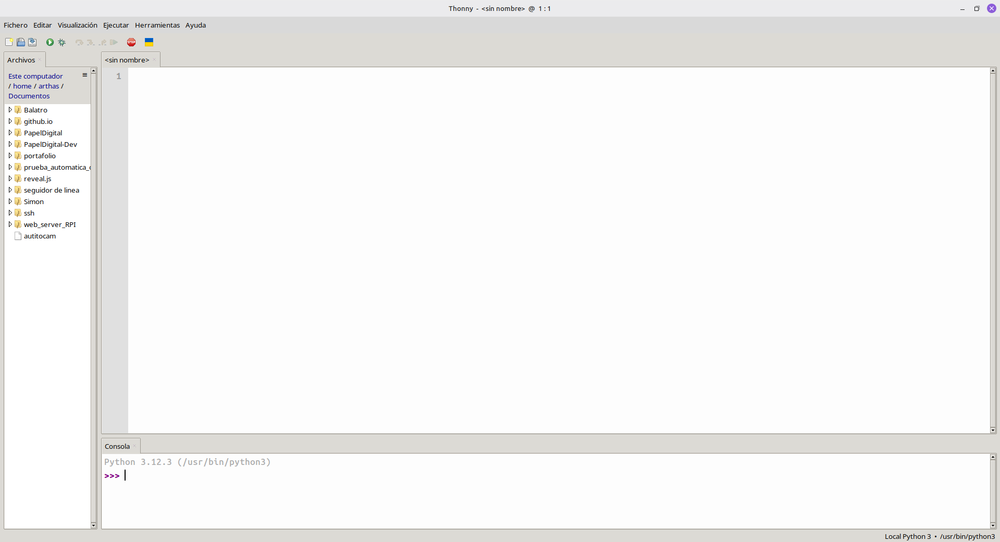
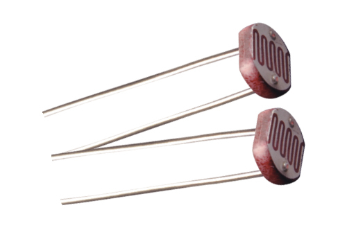
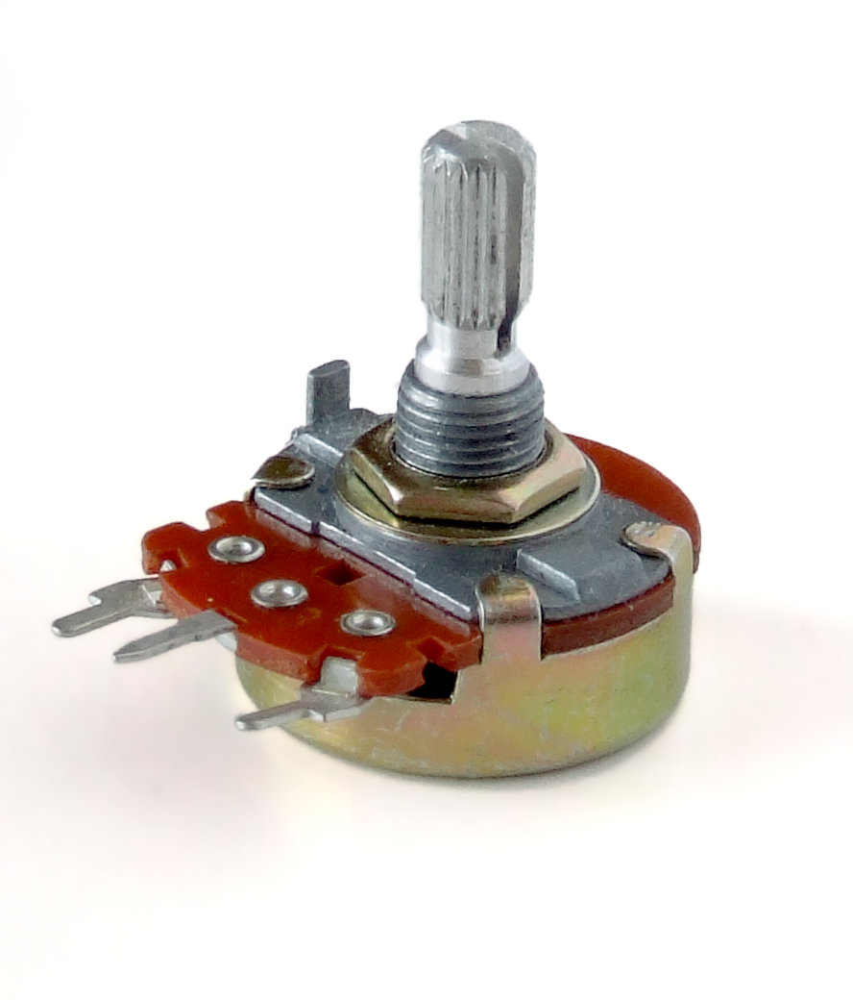

Unidad: Circuitos Eléctricos

Objetivo
Medir el voltaje de un circuito simple utilizando un tester para plantear experiencias de laboratorio.
¿Qué es la corriente eléctrica?

Definiciones
Corriente: Flujo de carga eléctrica a través de un conductor.
Se mide en Amperios [A].
Voltaje: Diferencia de potencial eléctrico entre dos puntos de un circuito.
Se mide en Voltios [V].
Resistencia: Oposición al flujo de corriente eléctrica.
Se mide en Ohm [$\Omega$].
Ley de Ohm: Relación entre el voltaje, la corriente y la resistencia. En un circuito simple se cumple que $V = I\cdot R$
Para medir estos componentes se utiliza el tester

Desafío 1: Mida el voltaje de las baterías y compare los resultados.
Desafío 2: ¿Es el valor medido el mismo que el indicado en la batería?
Si hay diferencia, ¿a qué se puede deber?
Desafío 3: Mida el voltaje de las baterías en serie.
Desafío 4: ¿Es el valor medido el mismo que el indicado en las baterías?
Si hay diferencia, ¿a qué se puede deber?
Objetivo
Medir resistencias unitarias, serie y paralelo utilizando un tester para plantear experiencias de laboratorio.
Desafío 1: Mida el valor de una resistencia con el tester
Definiciones
Resistencias en serie: Dos resistencias que comparten un único nodo
Resistencias en paralelo: Dos resistencias que comparten sus dos nodos

Desafío 2: Mida el valor de dos resistencias en serie con el tester
Desafío 4: Compare los resultados de la clase y determine la relación entre el valor de las resistencias en serie y el valor medido con el tester
Desafío 5: Mida el valor de dos resistencias en paralelo con el tester
Desafío 6: Compare los resultados de la clase y determine la relación entre el valor de las resistencias en paralelo y el valor medido con el tester
Objetivo
Medir corriente en circuitos utilizando un tester para plantear experiencias de laboratorio.
Recordando
- ¿Qué es la corriente?
- ¿Cómo la medimos de forma práctica?
- ¿Cómo se mide de forma teórica?
Desafío 1
- Arme un circuito simple
- Determine el voltaje y resistencia del circuito
- Calcule de forma teórica la corriente del circuito
- Mida la corriente del circuito de forma práctica
Desafío 2
- Arme un circuito con dos resistencias en serie (distintas)
- Mida el voltaje y resistencia del circuito
- Calcule de forma teórica la corriente que circula por cada resistor
- Mida la corriente del circuito de forma práctica
Desafío 3
- Arme un circuito con dos resistencias en paralelo (distintas)
- Mida el voltaje y resistencia del circuito
- Calcule de forma teórica la corriente que circula por cada resistor
- Mida la corriente del circuito de forma práctica
- Mida la corriente que pasa por cada una de las resistencias
- ¿Qué relación tiene la corriente que pasa por cada resistor y la corriente total?
Objetivo
Programar LEDs utilizando una Raspberry Pi pico

Estructura básica de un programa
#Librerías
from machine import Pin
from utime import sleep
#Conexiones
led = Pin(25, Pin.OUT)
#Algoritmo
led.on()
sleep(1)
led.off()
Desafíos
- D1: Prende y apaga el led 2 veces
- D2: Prende y apaga el led 3 veces, con diferentes tiempos
- D3: Prende y apaga 2 leds alternadamente
Desafío 4
Prende y apaga 3 leds en el siguiente orden
| Led1 | Led2 | Led3 |
|---|---|---|
| E | A | A |
| A | E | A |
| A | A | E |
| E | E | A |
| E | A | E |
| A | E | E |
| E | E | E |
| A | A | A |
Objetivo
Investigar el comportamiento de un LDR variando la intensidad luminosa y comparando los resultados
Materiales
- LDR
- Protoboard
- Cables cocodrilo
- Cables Duppont
- Resistencia de 1 kΩ
- Tester
- Raspberry Pi Pico
Marco Teórico: LDR

Un LDR es un resistor cuya resistencia disminuye cuando aumenta la intensidad de luz que incide sobre él.
Pregunta de investigación: ¿Cómo varía la resistencia de un LDR en función de la intensidad luminosa emitida por un LED?
¿Cuáles son las variables de esta investigación?
- Variable independiente: Intensidad de luz del LED
- Variable dependiente: Resistencia
- Variable controlada: Distancia, luz ambiente, voltaje
Marco teórico: Regular la intensidad de un led
#librerías
from machine import Pin
from time import sleep
#Conexiones
led = Pin(25, Pin.OUT)
#Algoritmo
led.on() # 100% de luz
sleep(3)
led.off() #0% de luz
#librerías
from machine import Pin, PWM
from time import sleep
#Conexiones
led = PWM(Pin(25, Pin.OUT))
led.freq(1000)
#Algoritmo
led.duty_u16(65535) # 100% de luz
sleep(3)
led.duty_u16(0) # 0% de luz
Completa el informe de investigación
- Hipótesis (¿Cuál crees que será la relación de las variables?)
- Montaje y consideraciones (Esquema y consideraciones)
- Toma de datos (tabla de % de luz y resistencia)
- Análisis de datos (Variables derivadas y Gráfico a partir de la tabla)
- Evaluación del modelo (¿Cómo se comporta el LDR en condiciones de alta o baja luz?¿Sigue alguna condición matemática?)
Objetivo
Medir la resistencia de un potenciómetro a través de una raspberry pi pico
Potenciómetro

Un potenciómetro es un resistor cuya resistencia varía cuando se gira su perilla.
Leer un potenciómetro
#librerías
from machine import Pin, ADC
from time import sleep
#Conexiones
pot = ADC(Pin(26))
#Algoritmo
while True:
valor = pot.read_u16() #Lee entre 0-65535
print(valor)
sleep(0.5)
Planteemos una pregunta de indagación
¿Cuál es la relación entre el valor ADC medido por la raspberry pi pico y la resistencia indicada en un tester
- Variable independiente: Valor ADC
- Variable dependiente: Resistencia
- Variable controlada: Voltaje de referencia, temperatura, potenciómetro
Complete el informe en su cuaderno
- Plan de investigación (¿Cómo vamos a medir?)
- Marco teórico (Ecuaciones y conceptos clave)
- Hipótesis (¿Cuál crees que será la relación de las variables?)
- Montaje (Esquema o fotos, y consideraciones al medir)
- Toma de datos (Tabla de mediciones)
- Análisis de datos (Variables derivadas y Gráfico a partir de la tabla)
- Conclusión (relación entre variables de forma práctica)
Trabajo evaluado
Realiza una investigación que permita obtener la relación entre el ángulo de giro de un potenciometro y la resistencia de este
- Pregunta de indagación (variable dependiente, independiente y de control)
- Plan de investigación (¿Cómo vamos a medir?)
- Marco teórico (Ecuaciones y conceptos clave)
- Montaje (Esquema o fotos, y consideraciones al medir)
- Toma de datos (Tabla de mediciones)
- Análisis de datos (gráficos y resultados)
- Conclusión (relación entre variables de forma práctica)
Preguntas PAES de Circuitos